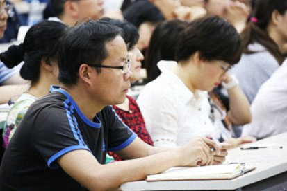
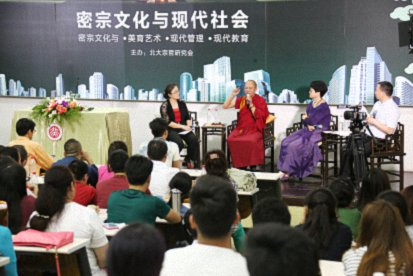

密宗文化与现代教育——北京大学座谈
『2015年6月6日』
主持人：
最后一场“密宗文化与现代教育”，也是我最关心的话题，出场嘉宾是女子德慧大学堂的王校长和北大的朱教授。请王校长先提问。
王校长：
尊敬的堪布，在座的各位朋友，有机会近距离地向堪布请教，特别荣幸。
之前我读过很多关于堪布的报道，说堪布给汉地传法近三十年，日夜奔波，他的心脏不太好，但他自己可能并不觉得，因为有一个钢铁般的意志。
今天跟堪布面对面坐着，的确感受到了堪布的“心脏”。接下来的提问，因为我是女子德慧大学堂的校长，所以问题可能都会跟女人有关。
主持人：
堪布，您可以拒绝回答噢。校长不要为难出家人噢。
王校长：
不会的，我想在堪布心里，男女都是平等的。
当年大爱道在佛陀面前恳求出家的时候，虽然佛陀慈悲应允，但是他说，因为女众出家，佛法要早灭五百年。在《大爱道比丘尼经》中，佛陀甚至讲了女人的84种丑态。
但在密宗里，女性的地位是非常高的，还有很多女性成就者。
所以我想问堪布，您如何看待女性的地位和修行？
索达吉堪布：
关于佛教的住世，不同经典、续部，包括一些世间智者，对此都有非常多的说法。比如《白莲花经》中讲，佛法不会隐没，佛陀也没有涅槃的时候。所以有一种说法认为，佛陀虽然讲了《大爱道比丘尼经》，但他的真实意趣并不是女众出家会缩短佛教住世期；当然也有一种说法是，佛陀的教期确实有年限。
其实佛教教义有了义、不了义、意趣、秘密等不同说法，我们在理解的时候，如果只根据个别历史和教言来判断整个佛法的内容，是不合理的。
包括佛教戒律，从总体上看，也是男女平等的。不管在显宗还是密宗，男性都可以受居士戒、沙弥戒、比丘戒；女性也可以受居士戒、沙弥尼戒、比丘尼戒。虽然出家后的戒条会有所不同，但在受戒待遇上是平等的。
但男女众的出家戒条为什么会有差别呢？这是因为女众在生活的某些方面的确存在弱点，比如成办事情的能力比较薄弱、嫉妒心比较强、心眼比较小等等。当然，有些女众也像男性一样，比较开放、包容，但大多数女众还是会有这种特点。所以佛陀在不同经典中，针对女性也宣说了不同的教言。
而在密宗当中，不仅男女平等，甚至诽谤女众就犯了密乘戒。这也是佛教中很重要的一种思想。
所以佛在不同经典中讲的内容，有不同的意义和解释方法。
我本人在男女平等方面做过一些研究，在不同场合也进行过讲座。我认为在某些层面上，佛教应该更加重视女性，这一点很有必要提醒大家。为什么？因为十四条密乘戒中，并没有说诽谤男性会破根本戒；而女性，佛陀说是不能诽谤的，从历史上看，女性修行者中间也确实有很多的成就者、空行母。
去年在哈佛，我听过一堂课，上课的人是珍妮·嘉措教授，听课的大概有二十来人。当时他们正在学习藏传佛教益西措嘉空行母的传记，讲藏地女性的智慧和勇敢，我说：“我也去当她一节课的学生。”学习过程中，他们说：“藏地女性在生活中遇到困难的时候，非常坚强。”
后来我说，一般在藏传佛教里，益西措嘉空行母的传记并不是很受重视，因为那只是一种故事。但哈佛大学原本对女性的精神、智慧就研究得非常深，对藏传佛教的历史也很感兴趣，所以会把它当教科书一样来分析。
当然这跟西方的女权主义思想也有关系，在座很多女性可能对此有所了解，包括那位教授也在倡导女权主义。二十年前我陪法王去美国的时候，她就在法王面前说：“女性应该跟男性平等。”当时她还比较年轻，非常活跃。但去年再见到她时，已经变成了一个老太太，没有当年活跃了，不过也还是在这个领域研究着。
总之，佛教对于性别应该是平等的，这种平等性在不同层次的经典、论典中都可以体现。
主持人：
非常感谢！请朱教授提问。
朱教授：
非常高兴能得到这个邀请，跟堪布学习、讨论、交流。我的问题可能与北大同学的关系更加密切一些。
前面主持人也提到，北大钱理群先生曾经有一个关于北大学生的观点，在社会上流传很广，他认为北大正在培养“精致的利己主义者”。但我个人不太认同这个观点。过去四年，我对北大学生进行了一次追踪调查，人数不多，大概三十几位。每一年我都会跟他们做深度交流，多次交流之后，我觉得北大同学并不是没有理想、没有社会责任感。这些人当中，一些同学发展得比较好，社会责任感也比较高，有着非常强烈的服务社会的意愿；一些同学也有理想的萌芽，但可能在这四年中，苗芽成长得不是很快，不够强大；还有一些同学则属于，用他的原话讲就是“有理想，没蓝图”。
所以我感觉，北大同学的状况其实更像堪布刚才提到的：每个人心中都有一个如来藏，或者说夜明珠，只不过在成长过程中，可能受到了各种各样的污染。
佛教中常常这样比喻，认为明珠上的污垢需要净除。汉传佛教里有“去粘解缚”的说法，神秀大师那个著名的偈子，表达的也是这个意思。
而在密宗文化里，肯定也有关于如来藏的见解和修行。您觉得密宗在激发人的潜能，或者说开发如来藏、恢复它的本有光彩方面，有哪些独特的教育手段值得大学老师们借鉴？

索达吉堪布：
教授说的这些，我有同感，我也在不同场合遇到过北大的老师和同学。当然极少数从北大出来的人，没什么理想、找不到工作，这种社会现象是有的，但它不能代表这个学校、代表整个群体。
我也听过一些台湾的教授，用不太好的比喻来评价北大、清华，对此我并不认同。因为这里是大家公认的中国最主要的教育基地，这里培养出来的人才，确实对社会担负着一定的责任。
去国外的时候，我也经常遇到北大出来的留学生，有时候我也带着一种像警察那样的心态，想看看他到底有怎样的理想、出国的目的是什么。观察之后也觉得，他们对社会、民族、国家，乃至全人类，还是有着非常强烈的使命感，那种发心很了不起，让我这个学习大乘佛法多年的人也觉得很惭愧。
所以对这个社会的很多现象，如果想真正了解，可能要一分为二地去理解、判断。
关于开发如来藏，在密宗或者大乘佛法中，有什么秘诀、方法呢？有一把最好的钥匙，就是大乘菩提心。
我翻译过一部释迦牟尼佛的广传，名字叫《白莲花论》，用六个月时间，从藏文翻成汉语，总共有五百多页。在翻译过程中，真正感受到利他思想的重要性——人类生存在这个世界上，最主要的价值，应该是帮助别人。
当我们看到新闻中的腐败案，一个小小的科长家里藏着一亿人民币，会觉得人真的太自私了。虽然只是个别人，但也是这个社会的现实。
有时候想，如果有这么多的钱、这么大的能力、这么好的资源，就可以去帮助很多人，比如边远地区的贫困学生，比如柬埔寨、缅甸等国家的难民营——我去过那里，看到很多非常贫穷的人。如果人类能把自己的利他心发挥出来，就会知道该如何去做。
所以开发如来藏的第一个方法，是发心——发利他的愿。我们活在这个世间，需要生存，需要吃穿住行；但更重要的是在有生之年，能用自己的心和行为，做几件对别人有益的事，并且有头有尾地坚持。其实坚持很重要，很多人做事不能坚持，过一段时间就变了。
第二个方法，如果想更深层地开发如来藏，懂得它的真正面目，就要学习密宗出世间的更高境界，通过灌顶、修行、窍诀直指等方法，到一定时候会明白，原来心的本来面目就是这样，如莲花出淤泥而不染；又像明镜，从来也没有被贪嗔痴、名闻利养等世间八法所遮障。
这种境界不是别人说的，而是得到上师指点后，自己认识的。认识之后，再遇到世间的任何困难、痛苦，你都会自由自在。到那时，不但自己完全从烦恼的网中得到解脱，所作所为也无一不在利益众生。
总之，开发如来藏的方法首先是发心，而更深层次的就要进入密乘道，通过次第修行和窍诀指引才能认识。否则，只是用一种世间的道理，想真正开发如来藏，恐怕有一定的困难。
主持人：
现场有人提问：“我是一名大学教师，当代大学生在婚恋过程中，经常有未婚同居、堕胎的现象，这已经成了一个教育问题。请问您从密宗文化和教育的角度，对此怎么看？”
看来是一位慈悲的老师。大学教育确实会面临一些很现实的问题，请堪布来谈一谈。
索达吉堪布：
其实我作为出家人，对这些问题关注得不多，但它毕竟也是众生的烦恼，尤其对现在的年轻人来说。
给大家讲个故事吧。
从前有个女人认识了一个男人，最初非常喜欢他，觉得一切都很美好，男人也很伟大，就跟他结婚了。但是婚后，家里开始发生各种各样的问题，丈夫也变得不像从前。
后来，女人遇到一个禅师，向他请教。禅师指着远方一座云雾缭绕的山给她看：“那座山美吗？”
“很美。”她说。
“那我们就去看一下。”
禅师带着女人去爬那座山。山路崎岖，有很多碎石、荆棘，她走得特别艰难、痛苦，好几次都想放弃。
当他们爬上山顶的时候。禅师又指着远处的山问：“那座山美吗？”女人摇摇头说：“很美，但我已经太累了。”
禅师想告诉她什么？其实世间的感情就像这样，起初接触不深，看对方就像看一座远山，觉得特别美好；等到相互走近，一起生活，就会出现很多矛盾、痛苦，像走在坎坷的山路上，慢慢觉得一切都不再是想象中的样子；而当最后站上山顶，其实之前的每一步都是人生的承担和进步，你明白了，人生也基本上走完了。
对很多大学生来讲，感情都只是一座远山，他并没有真正体会过爬山的滋味。等到大学毕业，面对现实生活，才明白一切并不像原来期待的那样。但这或许也是一种修行。
我出过一本书，叫《残酷才是青春》，在里面讲了很多这方面的道理。很多年轻人，该读书的时候不好好读书，却在因缘没有成熟的时候做一些事，结果只是感受痛苦。我也经常劝告一些藏族大学生，大学期间应该尽量把心放在学习上，至于成家立业，以后有的是时间。
其实大学时光是特别珍贵的，那里有很多重要的老师，如果你没有好好跟随他们学习，没有从他们身上获得知识，将是人生的遗憾。
所以大学期间，不要以谈恋爱等方式耗费光阴，虽然它是合法的，但会对当下的学习、将来的人生都留下伤痕。不仅是大学生，大学老师更要关注，因为管理者的心态也很重要。
至于堕胎的问题，不用说密宗文化，即便在显宗文化中，也明确说堕胎是有报应的，比如专门有一部《佛说长寿灭罪护诸童子陀罗尼经》，就讲了很多堕胎的过失和果报。
朱教授：
刚才堪布从佛教角度讲到，堕胎是有因果报应的。我也想从现代科学学术研究的角度，来讲一下它的因果报应。
现代的学术研究，其实就是在研究事物之间的因果关系，在这一点上，跟佛教提到的因果有着一定的共性。我们先不谈三世因果，单从现世来说，堕胎是一个因，它一定会在你日后的生活中产生一个果，也就是一系列的影响：影响你的身体健康、对生命的看法、家庭观念、对爱情的态度，等等。如果现在的你不去约束、规范自己的行为，就等于给自己种下一个恶因，日后的恶果也一定是自己要品尝的。所以堕胎这件事有它的因果，即便不是佛教的因果报应，也有科学方面的佐证。
而堕胎本身既是影响将来的一个因，也是过去因产生的一个果，如果你不想品尝恶果，就一定要在前一个时间段种下善因——你对爱情的珍惜、对生命的尊重。
现在有很多大学生在吃素，我们北大也有素食协会，这是对生命的尊重；也有很多女大学生宣言说“不穿皮草”，这也是对生命的尊重；而选择不堕胎，更是对生命的尊重。如果要做到这一点，你就得约束自己未婚同居的行为，或者说如果一定要同居，至少也做好安全措施，这是我给大学生们的建议。
主持人：
谢谢朱教授的慈悲补充。
王校长：
我还想接着请教。
人性和神性是不是像鱼和熊掌一样不可兼得？比如我们这些在家女性，有生活、事业，不可能像益西措嘉佛母那样专门修行。那怎样才能既完成世间的使命，又具有出离心、菩提心？或者说，在家女性该如何修行？
索达吉堪布：
其实益西措嘉空行母也是一位在家女性，她是在兼顾当时的工作、家庭事务的同时，完成修行的。并不一定要出家、走进寺院才能修行，如果你是在家人，能认真对待工作和家庭，并在此过程中保持一种善良，这也是修行。
所以，信仰佛教的在家女性不要急于抛弃一切去修行。抛弃一切，并不是佛教的基本理念。从佛陀的思想来看，最基本的，应该是做一个善良的人。你可以一边做很好的在家人，一边不断地修行。坚持修行，就是最好的成长。
有些佛教徒比较过激，要么放弃所有的责任去修行，要么放弃所有的修行忙于世间琐事。当然，如果不修行，忙什么都可以，但既然是修行人，你就有了双重身份，在两方面都负有责任，还是要兼顾着去完成。
主持人：
现场有个提问：“现在‘灵修课程’很流行，不知道堪布听说过没有，它跟密宗教育有关系吗？”
索达吉堪布：
我对这些有过一点了解，但不在此做评判。
实际上，不管世间还是出世间的课程，如果能对身心健康带来直接或间接的利益，我们就可以接受；反之就要拒绝。
每个人都应该打开智慧的眼，进行观察和选择，不只对课程，还包括授课老师。这也是密宗文化中非常强调的。
今天这个社会，有各种复杂的知识和复杂的人，懂得取精去粗，才是有智慧的选择。修行佛法，你会遇到好坏、美丑等等的二元对立；在世间的教育、管理等任何领域，你也会遇到形形色色的人和事。这种时候，智者总是再三观察，然后选择；愚者则是最后才醒悟，后悔莫及。你是智者还是愚者，就看你怎么选择。这种选择的智慧，在藏传佛教中尤为重视。

主持人：
这里有个提问：“堪布您好，我是一名大学生，在学业和工作竞争的压力下，我看了您的书，也发了菩提心，但我可能根基比较差，到现在还没有证悟。您是1985年发菩提心的，发了多长时间就证悟了呢？”
大家不要小看初学者，这个问题很有挑战性。
索达吉堪布：
发菩提心很重要，但它的行为不一定要很大。
对天边无际的众生，都要尽心尽力去度化——这是一个庞大的说辞，但更重要的，是结合自己的生活，落实在行为中。比如教授刚才讲到的，北大有很多人发愿不吃动物的肉、不穿皮草，这其实就是对菩提心的一种落实和积淀。
这个社会还有很多不好的习惯，都可以从我们自身开始改变。比如饮酒，最近很多地方在禁酒，我很高兴；比如抽烟，它对身心健康都有害，佛教对此也不赞叹，最近从北京开始，很多公共场所也在全面禁烟；比如吃肉，越来越多的人开始吃素，虽然保护动物的力量还比较弱，但毕竟有一部分人正在传递这份爱。这都是一种改变。
其实动物被残杀的过程，惨不忍睹，如果你去换位思考，想象它们的痛苦落在自己身上，这就是一种菩提心的练习。哪怕只有一天，你决定改变自己，利益众生，也比什么都不做好。
学佛时间的长短不重要，口头上的发菩提心也不重要，应该一天一天地去利益众生，就非常有意义。
王校长：
佛陀涅槃之前说，要以戒为师。这个戒是绝对的还是相对的？杀、盗、淫、妄、酒是五条根本戒，但很多仁波切也结婚了，对此应该怎么理解？到底什么是戒？
索达吉堪布：
戒在一定程度上，是绝对的；在一定程度上，也可以说是相对的。佛陀讲过三种戒律——别解脱戒、菩萨戒和密乘戒，就代表了三种不同层次。
所以对于仁波切结婚的现象，也可以从两方面来理解：
一方面，如果这位仁波切的境界，确实超越了世俗的情感、贪心，只是为了度化众生而示现结婚，也是合理的；但如果他有世间男女之间的烦恼、执著，即便名称上是仁波切，严格按照戒律来讲，也是不合理的。
大家可能听过鸠摩罗什的故事。鸠摩罗什是汉传佛教非常著名的译师，虽然他的传记在历史上有不同版本，比如《高僧传》和《晋书》中的记载就有所不同，但基本上是一致的。
《高僧传》中说，鸠摩罗什在龟兹国的时候，声名远播，前秦的国王觉得他堪为国宝，非常希望得到他，于是派将军发动战争。但将军并不认可鸠摩罗什，把他抢到之后，就逼他跟龟兹王女结婚。后来前秦国王被杀，将军异地称王，建了后凉。
还有一段，是后凉国王曾经派十个伎女用美酒灌醉他，逼他接受。
但不管怎样，后来鸠摩罗什仍然不断讲经说法。《晋书》中说，当时有很多弟子对他产生质疑，并且效仿他还俗，做一些破戒的不如法行为。有一天，鸠摩罗什当着他们的面，把一满钵钢针全部吞下去，说：“谁有我这样的能力，也可以结婚。”
虽然个别历史学家不承认这些故事，但我是相信的。它其实是一段真实的历史，是真实发生过的事情。
所以藏传佛教的一些仁波切、活佛、上师，如果有鸠摩罗什这样的境界或者功夫，结婚也可以。否则，密乘戒的要求其实非常严格，如果只是一般凡夫，跟世间人发生这样的关系，恐怕是不行的。
还有一个方面的理解，是藏传佛教的仁波切也分出家人和在家人，在家的仁波切相当于汉地所说的“居士”，他并没有受出家人的戒，所以在结婚这些事情上是自由的。他以在家身份钻研、热心于佛法，但不存在破戒、还俗的问题。
对这类问题，不管是佛教徒还是非佛教徒，可能都需要理性分析。如果一概而论、一网打尽，不一定合理。
主持人：
穿插一个现场提问：“我是一名学生，刚才王校长说您心脏不好，我很难过，听说发了菩提心就会为众生担负罪业，是不是因为您的菩提心发得比较早，所以影响了心脏？但是我又听说，证悟者都有神通，您为什么不用神通把自己的心脏先治好呢？”
大学生的问题都很可爱。
索达吉堪布：
不知道是谁发现的，说我心脏不好。我自己认为我的心脏是很好的，我的心是很健康的。（笑）
前几天我去做了体检，医生问：“你有什么不好的地方？”我说：“没有。”医生问：“心脏怎么样？”我说：“挺好，很健康。”
我对医生都这样回答，所以没这回事。
朱教授：
我想说的可能跟这个问题有点相关。还是从北大学生的故事讲起，也是我访谈过的一个学生。
他就读于政府管理学院，一般来讲将来的职业方向是公务员。他大一的时候，我去做过访谈，他说：“我的理想是当国家主席，将来要改变民生。”
当时我很尊重这个学生，觉得他非常了不起。你想一个刚刚高中毕业的十七八岁的小男孩，就有这样的志向。也许在我们成年人看来觉得挺可笑的，毕竟国家主席都是从清华出来的，你最多当个总理。但的确很让人钦佩。
然后上一周，我又去访谈他。他已经大四了，告诉我说：“朱老师，我觉得自己当不了国家主席，也就能当个市长吧。”我问他：“为什么现在这样想呢？”他说：“一想到要当国家主席，就觉得好累啊，一累我就想睡觉。”
所以想问堪布两个问题。第一个是，如果遇到这样的徒弟，您会怎么做？第二个是，虽然您的心脏没问题，但还是很辛苦，因为我听朋友说，您为了寺院的发展，经常只睡一两个小时。所以在您弘法利生的过程中，难道就没有“一想到无量众生还没有被度化，就累到想去睡一会儿”的那种经历吗？
索达吉堪布：
如果有一个这样的学生，我会对他特别关注，一直跟踪他的成长。因为有这么大的发心，想要改变民生，这种学生在我的教书生涯里也非常罕见、难得，或许会有无量的前途。
还有一个想跟踪的原因，可以从心理学的角度讲。因为我有一种怀疑：再过十年、二十年，他的心会变成怎样？刚进大学的时候，他想当国家主席，现在想当市长，再过一段时间，会不会继续退，成了厅长、县委书记，或者一个校长？这样可能就不太好。
也许是他在成长过程中，慢慢发现自己的能力有限，但其实，曾经的理想，最好不要轻易退失。我看过一本书，讲一些美国总统其实在读书时代就有当总统的理想，这就像“吸引力法则”中所说，你期望什么，很可能就实现什么，比如想当老师，就通过各种方式去努力，到最后也许真的成了一名老师。
因此我想，一方面有必要跟踪他的成长，一方面也要劝他，不要让理想越来越小，否则，刚开始想当国家主席，到最后却什么理想都没有了，这不太合理。
佛教中讲“愿大力大”。如果今天有一个崇高的理想，未来就会有很多成功的机会。就像射箭，要把眼光投在远处，箭才会射得越来越远；人生也要定一个长远的目标，很多事情自然会奇妙地发生。如果你只想着自己的前途，或者自己的小家庭，从北大毕业的时候，也许就成了只是对自己和家庭有用的人，再没有其他价值。但如果你能一直想着国家、民生，想到全人类和全世界的利益，只要这个理想没有退失，你的人生应该非常有意义。
至于第二个问题，其实我非常关心自己的身体。吃饭、睡觉都很注意，早上起来，还会经常磕长头。说我只睡一两个小时，这是一种夸张的传闻，肯定不符合实际。虽然我的睡眠比别人稍微少一点，但也足够了。
其实这个肉身，保养得再好也维持不了多久。汉地一些禅宗法师，年龄最高的也只是一百来岁，有一位梦参老法师，活到一百零几岁，我认识的本焕老和尚，是106岁圆寂的。所以人生很短暂，再怎么长寿，也活不了多少年。
你们北大也有很多长寿的老教授，尤其在哲学系特别多，听说叫“长寿系”，我很羡慕。这些教授应该都在八九十岁高龄以上，他们这么长寿，可能也跟保持心灵的快乐有关。不管生活中发生了什么，都不要特别去追随、计较、伤心、执著，这样对你的身体和寿命有害。应该像禅宗故事里讲的那样，人生短短几十年，要对一切坦然面对、洒脱自在，这才是对健康最有利的。
主持人：
换一个可爱的大学生的问题：“堪布您好，我读过您的书，书中谈到放生的利益，让我很感动，于是跟着一个高校佛学社去放生。但是去买生命的时候，我发现那个卖动物的人很高兴，我就在想，这里也有因果啊——我们在这边放生，他在那边捕更多的动物。所以请您讲一讲，究竟什么是放生？这是第一个问题。第二个问题，您一直在讲‘要发出离心’，可我是大学生，如果出离了，我的学习动力从哪来呢？”
索达吉堪布：
放生，要在有因缘、有条件的情况下去做，而且不在于放很多。有必要的时候，哪怕只是一只鸟、一条鱼，让它重回大自然的怀抱，看着它自由自在地飞向蓝天、游向水底，你的内心也会有一种放松和快乐，这是一种特别的感受。在这个过程中，你会认识生命的价值，从而明白放生的意义。
所以生活中的放生是很随意的，只要各方面因缘具足，都可以。
至于大学生修出离心的问题，其实出离心是一种很高的境界。作为学生，对世间还没有看破，而学佛其实需要一个比较高的基础。所以很多佛教徒也会选择行持十善，过一种比较适合自己的信仰生活。
当然，如果从浅层次理解出离心，它的意义是让人们不贪执三界中的荣华富贵，因为这些到最后都是梦幻泡影，为了出离，就需要认识事物的本相、感情的本相，包括世间一切盛衰无常的景象，到这个时候，出离心会自然而然生起。但在此之前，对如梦如幻的人生，你仍然要面对。
所以，如果修出离心就影响学业，修菩提心就完全不顾自己的生活，其实是走入一种极端了。佛法需要长期、系统的学习，如果看到一个词：看破、出离或者无二慧，就马上去修，结果影响到正常的生活、学习、工作，佛教对此也不允许。任何一个佛法概念，有它特定的基础、历史背景和想要实现的目标，不能只是在字面上简单理解。
经常有人问：“佛教不是说看破吗，你们为什么还要吃饭、穿衣服、走路？”“你不是读过《心经》吗，《心经》说一切都不挂碍，你为什么对这件事还有挂碍？”这种对佛教思想的断章取义，也是因为缺乏系统学习和整体了解。
就像管理学的某一个概念，不能代表整个管理学的理念；教育学的某一个名词，也不能代表所有教育学的内容。同样，佛教的出离心，不能代表佛法修持的所有阶段和教义。在某个阶段，它的确非常重要；但在眼下的生活中，并不要求你立刻看破所有的事情。
朱教授：
关于出离心，是不是在不同情境下，对不同人群，可以有不同的解释？有法师是这样定义的：所谓出离，是可以随时随地放弃你想要的那个东西。所以对大学生来说，出离心也可以理解成，调整自己的“弹性”。
比如今天你想去图书馆自习，结果图书馆停电了，这个时候，你就不能执著于“一定要来图书馆，今天非得看书，一定要按原来的计划去做”，而是愿意随时调整自己，让自己充满弹性，对所有的不确定性有一种接纳的能力。
照这样理解，出离心并不是让你放弃学习目标，而是懂得另找一条路、另换一个环境。我这样说对吗？
索达吉堪布：
对。出离的藏文是“恩炯”，意思是从一种情境中出来、离开，获得新的思想境界。从这个层面解释，像教授讲的那样，的确很多人比较容易理解。这可以说是一种出离的心态。
还有一种解释是，我们都会执著于一些事，比如财富、感情等，但如果懂得出离，即便在这些事情上受到挫败，内心也不会特别失落。因为你知道，高际必堕，万事万物都有毁灭的一天，这是事实，也是规律。这是另一种出离的心态。
而更深层的解释是，三界中的一切，到最后其实都不值得贪恋，应该唯一寻求寂灭、快乐、宁静的涅槃，也就是佛教传统中所说的最高境界。人们对梦幻泡影般的世事始终眷恋、贪著，但实际上，如果能把一切都抛开、舍弃，你将发现一个更美好的世界，这也是出离的结果。
所以对于“出离”，的确有不同的解释方法。
主持人：
来问今天的最后一个问题：“从您进场到现在，我听得越来越愉悦。我在想，如果有一天，北大能办一个佛学院，您会亲自来现场，把密宗所有的秘密，把刚才讲到的那些次第，完完整整讲给我们听吗？”
索达吉堪布：
照我的推测，将来北京大学不一定会有佛学院，但很可能会有宗教学院。
因为国外的很多高等学府，像哈佛大学、哥伦比亚大学、斯坦福大学等，都有一些宗教学院或神学院，他们的理念是对世界上的各种宗教，用一种包容的心态来研究。而北大的研究能力也很强，它如果研究佛学，应该同样会研究其他宗教，兼容不同的思想和观点。加上北大本来就有宗教系，今后宗教系扩大，成为宗教学院，这是很有可能的。
但不管将来会怎样，一个开放、包容的大学，对这里的老师、学生肯定会有直接或间接的利益，我在很多学校都感受到这一点。因为在求知过程中，大家会发现，人类的一部分问题，可以用现代知识来解决；还有一部分问题，则需要依靠古老甚至神秘的力量来给出答案。这也是为什么国外要讲“通识教育”——人类的教育应该包含人格、信仰等很多方面的道理，仅仅是知识的教育还远不足够。
所以，如果将来北京大学能开办宗教学院，以开放、包容的平台对各种宗教进行研究，我觉得非常有必要。
今天这个时代，对佛教感兴趣的人比较多，但在学校里，我从来不举办宗教仪式，也不劝人信仰佛教，而是更愿意和学校里的老师、学者做一些学术性比较强、挑战性比较大的交流。虽然对我来讲，这也是一种压力，但我很喜欢老师们来攻击我、批评我，好像内心会比较舒服，这也是一种心灵的按摩。刚才好几位不同专业的老师，都给我进行了心灵按摩，特别感谢他们！（笑）
主持人：
谢谢！让我们起立，合掌，以一颗从容、庄严、恭敬的心，欢送带给我们这么多愉悦的著名密宗教育家——索达吉堪布！